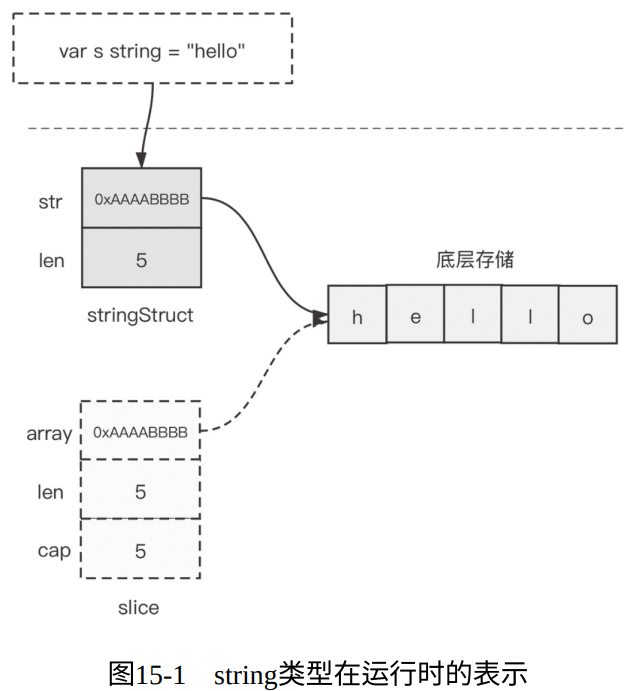

C语言使用以‘\0’结尾的字符类型数组来表示字符串，有如下缺点：
- 类型安全性差
- 字符串操作要时刻考虑‘\0’
- 字符串数据可变
- 获取字符串长度代价大——O(n)
- 未内置对非ASCII字符的处理
1. Go语言的字符串类型
在Go语言中，无论是 字符串常量、字符串变量、字符串字面量 ，其类型都被设置为 string 。具有以下特点：
- string类型的数据不可变 ：对string的底层容器仅能进行只读操作
- 零值可用
- 获取长度的时机复杂的是O(1)级别
- 支持通过 +/+= 操作符进行字符串连接
- 支持各种比较关系操作符 == 、!= 、>= 、> 、<
- 对非ASCII字符提供原生支持：Go语言源文件默认采用Unicode字符集
- 原生支持多行字符串
2. 字符串的内部表示
Go string 在运行时表示为如下结构：
// $GOROOT/src/runtime/string.go type stringStruct struct { str unsafe.Pointer len int }

- 在实例化string过程中，Go运行时会创建一个临时slice，供后续运行时层向其中写入数据使用。数据写入完毕后该slice会被回收
- 由上可知：直接将string类型作为参数传入不会有太多损耗，因为它代表一个描述符的窗口，而非底层容器数组
3. 字符串的高效构造
Go语言有许多构造字符串的方法：
- 使用fmt.Sprintf；
- 使用strings.Join；
- 使用strings.Builder；
- 使用bytes.Buffer；
它们的推荐使用场景如下：
- 在能预估出最终字符串长度的情况下，使用预初始化的strings.Builder连接构建字符串效率最高；
- strings.Join连接构建字符串的平均性能最稳定，如果输入的多个字符串是以[]string承载的，那么strings.Join也是不错的选择；
- 使用操作符连接的方式最直观、最自然，在编译器知晓欲连接的字符串个数的情况下，使用此种方式可以得到编译器的优化处理；
- fmt.Sprintf虽然效率不高，但也不是一无是处，如果是由多种不同类型变量来构建特定格式的字符串，那么这种方式还是最适合的；
4. 字符串相关的高效转换
- Go语言在标准库中提供了strings和strconv包，可以辅助Gopher对string类型数据进行更多高级操作。
- 可以去自行查阅其说明文档